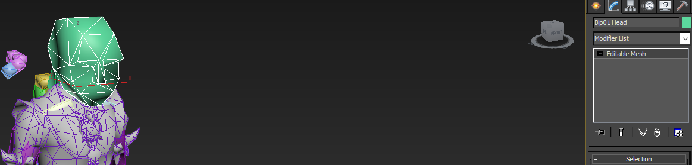
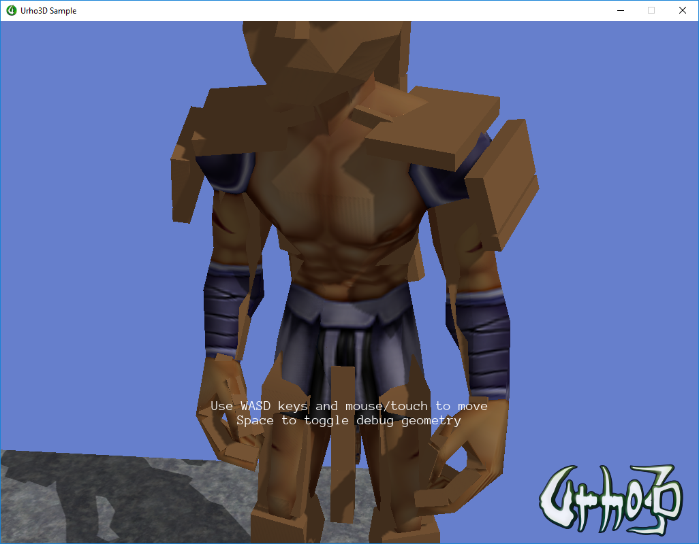

dev4fun
Hey, my skinned meshes on 3ds max uses biped skeleton as Editable Mesh (have nothing to do about it), this way, when I export to FBX and use AssetImporter from Urho3D, the skeleton is considered a normal mesh, and render this normally.


What can I do to hide this skeleton?
Thanks!